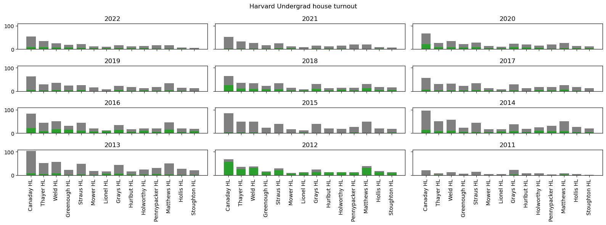
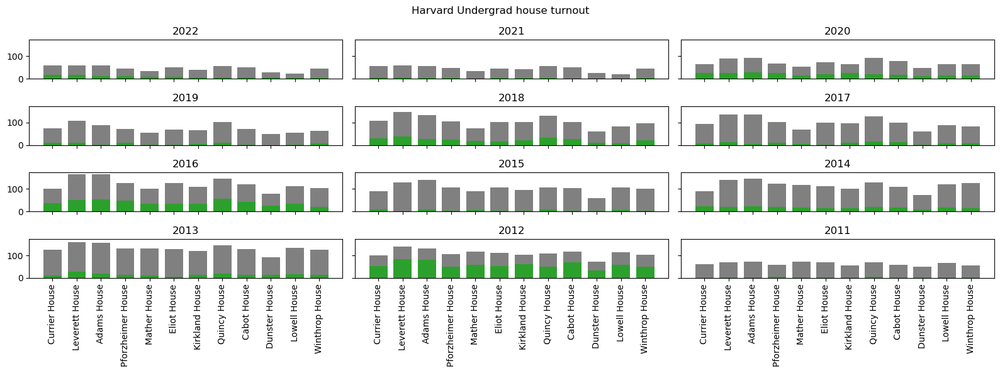
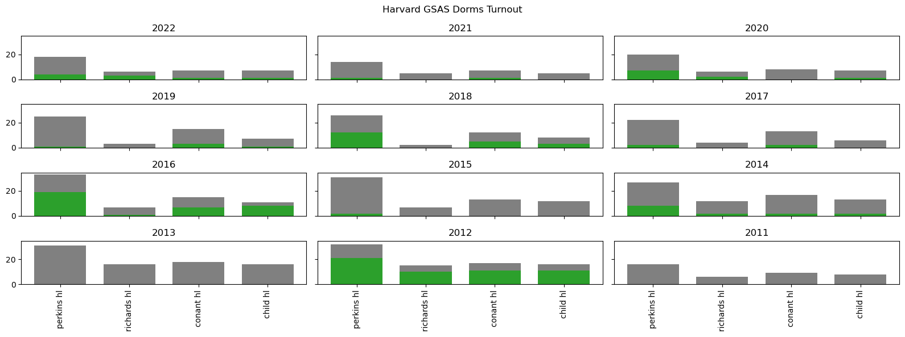
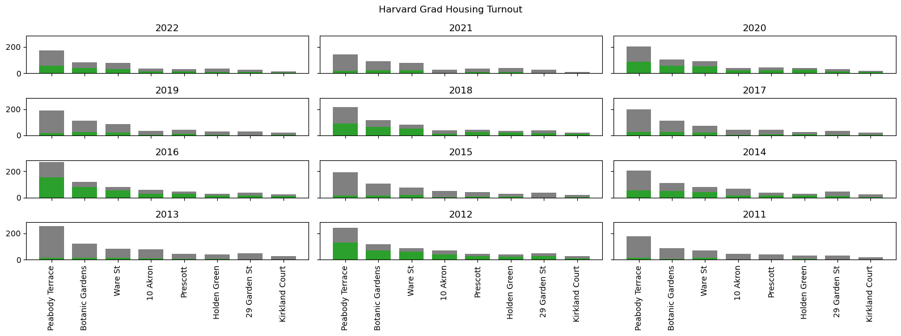

University Housing Turnout#
Cambridge is home to three Universities (Harvard, Lesley, MIT)
Harvard College#
https://oira.harvard.edu/factbook/fact-book-enrollment/
Total: 7,178 Not US citizens: 947
6231 Potential Voters
The overwhelming majority of Harvard Undergraduates live in one of the Harvard houses, so we
MUNICIPAL_YEARS = np.arange(2011, 2023, 2)
STATE_YEARS = np.arange(2012, 2023, 2)
NATIONAL_YEARS = np.arange(2012, 2023, 4)
ALL_YEARS = np.arange(2011, 2023, 1)
voters = load_full_dataset("data")
gsas_idx = find_housing_idxs(voters, gsas_dorms)
harvard_ugrad_idx = find_housing_idxs(voters, harvard_ugrad_houses)
hvd_law_idx = find_housing_idxs(voters, hvd_law_dorms)
harvard_housing_idx = find_housing_idxs(voters, harvard_housing)
harvard_1st_idx = find_housing_idxs(voters, harvard_1st_year)
mit_ugrad_idx = find_housing_idxs(voters, mit_dorms)
mit_grad_idx = find_housing_idxs(voters, mit_grad_housing)
lesley_housing_idx = find_housing_idxs(voters, lesley_housing)
Harvard First Year Houses#

Harvard Undergraduate Houses#

Harvard Grad Dorms#

Harvard University Housing#

df = turnout_by_year_key(voters, "univ_housing_name")
# groupby is the easiest way i could see to get the order I wanted
# couldn't get the reorder levels to work properly :/
df = df.groupby(["univ_housing_name", "year"]).mean()
fig, axs = plt.subplots(1,3, figsize=(16,6),constrained_layout=True)
for dorm in harvard_ugrad_houses.keys():
axs[0].plot(df.loc[dorm]['registered'], 'o--', label=dorm.split()[0])
axs[0].set_title("Registered")
axs[1].set_title("Voted")
axs[2].set_title("Turnout %")
axs[1].plot(df.loc[dorm]['voted'], 'o--', label=dorm.split()[0])
axs[2].plot(df.loc[dorm]['turnout'], 'o--', label=dorm)
plt.ylabel("Turnout %")
plt.legend(bbox_to_anchor=(1.05, 1), loc='upper left', borderaxespad=0.)
<matplotlib.legend.Legend at 0x7fcfe274b050>
# harvard_college_enrollment = {
# 6663
# 6632
# 6634
# 6645
# 6699
# 6722
# 6704
# 5197.3 7,095. 7,178}
# 7178 - 947
hvd_college_enrollment = {
2013:6671,
2014:6636,
2015:6634,
2016:6645,
2017:6699,
2018:6722,
2019:6716,
2020:5212,
2021:7095,
2022:7178,
}
# fig, axs = multi_year_bar(voters, university_housing_bar_chart, idx = gs['all'])
# fig.suptitle("Harvard GSAS Dorms Turnout")
# plt.tight_layout()